FIDS
Flight Information Display System
Sistem Informasi Penerbangan
Bandara Modern
Solusi lengkap pengelolaan dan tampilan informasi penerbangan secara real-time — dari penjadwalan hingga layar publik bandara.
✈ Real-Time
🖥 Multi-Display
🌐 Berbasis Web
🔊 Text-to-Speech
📊 Analytics
📱 Responsive
Tentang Sistem
Apa itu FIDS?
FIDS adalah sistem informasi bandara berbasis web yang mengelola seluruh siklus informasi penerbangan — mulai dari input jadwal master, operasional harian, hingga tampilan real-time di seluruh layar publik bandara. Dibangun dengan teknologi modern, dapat berjalan di perangkat apa pun yang memiliki browser.
9
Jenis Layar Display Publik
36+
Tabel Database Terintegrasi
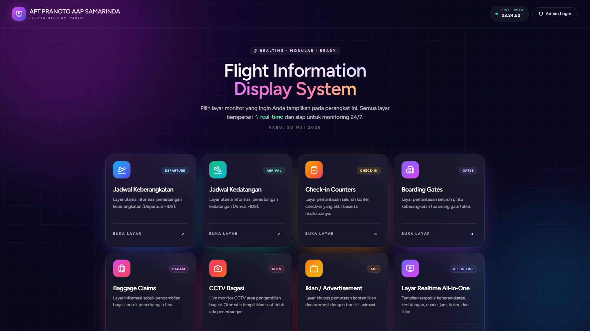
Portal Utama FIDS Halaman navigasi publik dengan akses ke semua layar display bandara
Keunggulan Utama
⚡
Real-Time Tanpa Reload
Status penerbangan diperbarui secara otomatis di semua layar tampil tanpa perlu refresh manual.
🖥
Multi-Screen Display
Satu sistem untuk 9 jenis layar tampil: keberangkatan, kedatangan, gate, check-in, baggage claim, CCTV, iklan, jam dunia, dan layar publik gabungan.
🔊
Public Address System
Pengumuman bandara dengan konversi teks ke suara (TTS) otomatis, dua bahasa, jadwal siaran, dan batas maksimum putar.
📺
Tanpa Hardware Khusus
Layar display hanya butuh TV/monitor + browser. Tidak diperlukan set-top box atau perangkat proprietary mahal.
🌏
Multi-Zona Waktu
Mendukung WIB, WITA, WIT, dan UTC — cocok untuk seluruh bandara di Indonesia.
📊
Laporan & Analytics
Laporan keberangkatan & kedatangan lengkap dengan grafik, on-time rate, delay rate, dan export PDF.
Layar Display Publik
Tampilan Real-Time untuk Penumpang
Semua layar tampil berjalan otomatis, diperbarui real-time, dan dapat dikustomisasi sesuai identitas bandara.
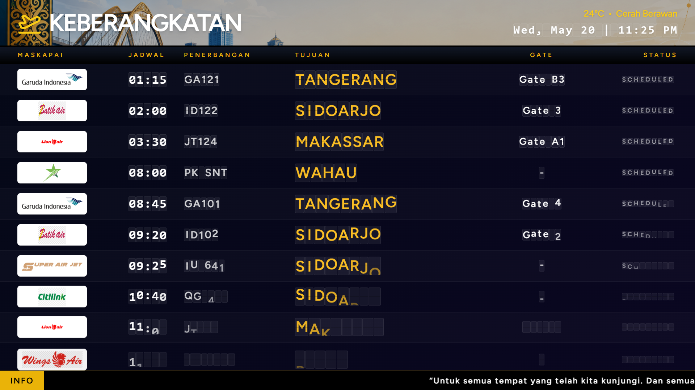
Papan Keberangkatan (FIDS Board) Nomor penerbangan, maskapai, tujuan, jadwal, gate, dan status
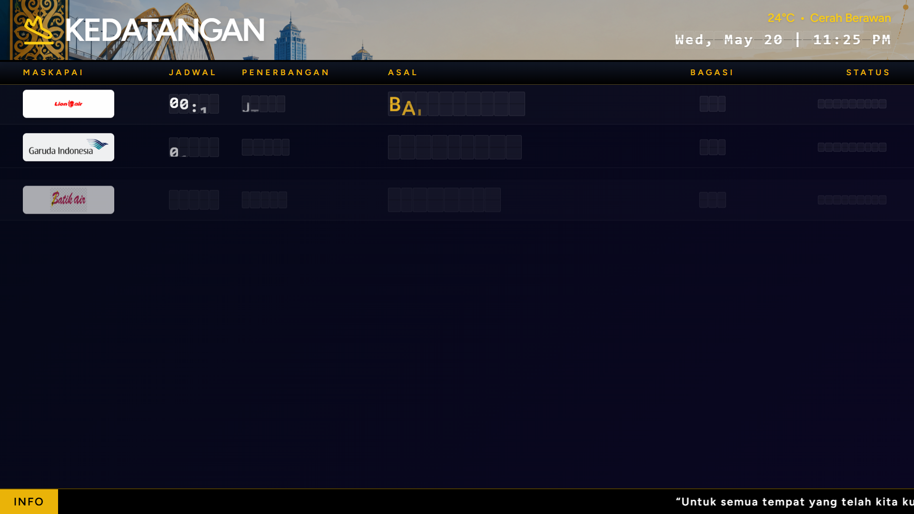
Papan Kedatangan Penerbangan datang, asal, baggage claim belt, dan status
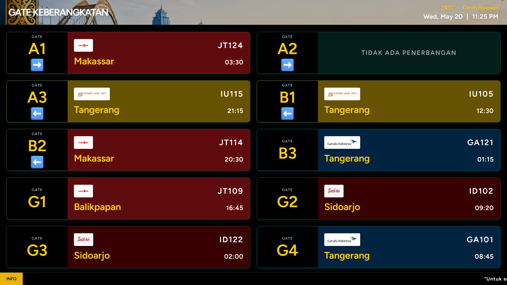
Layar Gate Boarding Tampilan per gate dengan maskapai, nomor penerbangan, dan tujuan
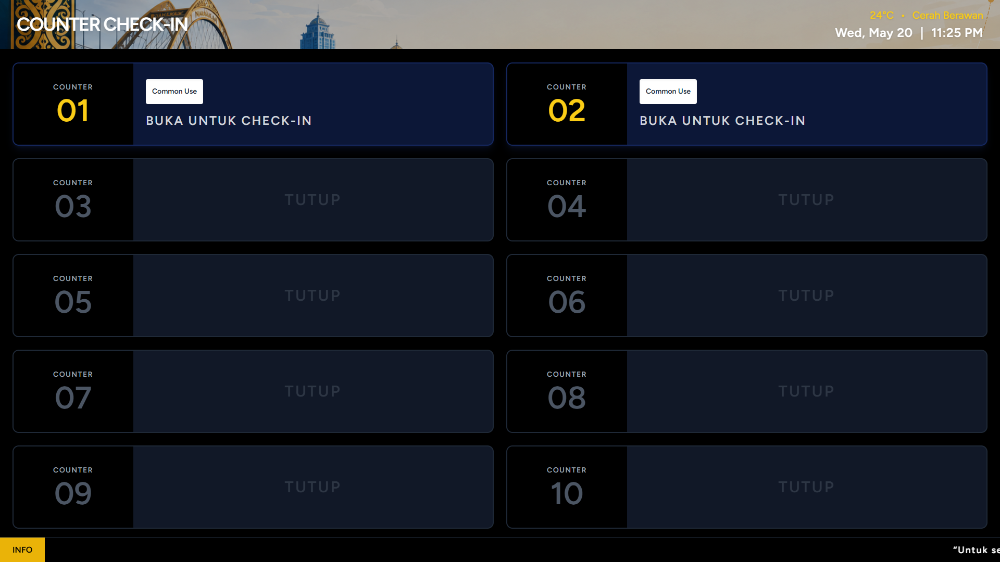
Layar Counter Check-In Status setiap counter: terbuka / tutup beserta penerbangan yang dilayani
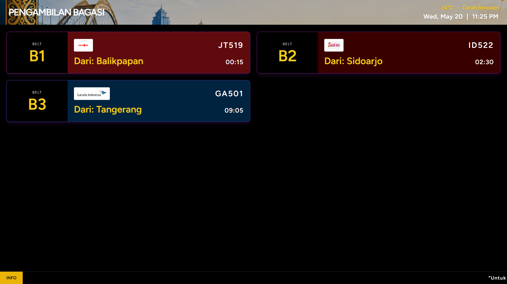
Layar Pengambilan Bagasi Belt aktif beserta penerbangan asal dan maskapai
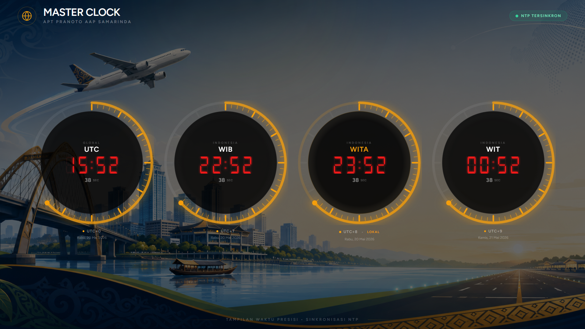
Master Clock / Jam Dunia UTC · WIB · WITA · WIT — sinkronisasi NTP otomatis
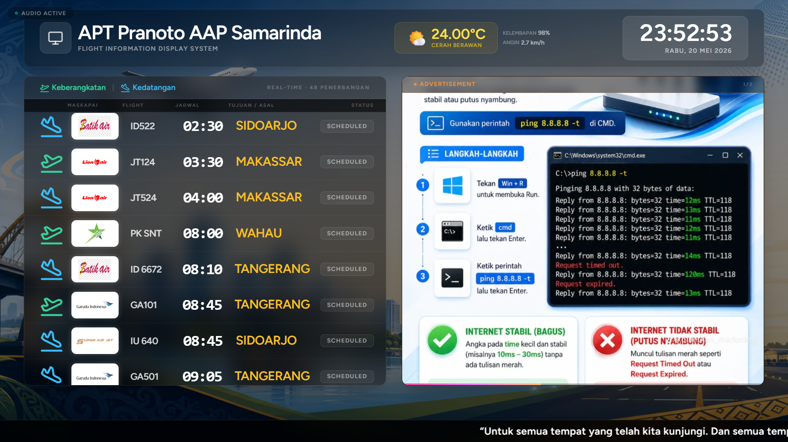
Layar Informasi Publik Gabungan Jadwal keberangkatan + kedatangan + cuaca + iklan + jam dalam satu tampilan, layout dapat dikustomisasi
Daftar URL Layar Display
| Layar | Fungsi | URL Akses |
|---|
| Papan Keberangkatan | Daftar penerbangan berangkat + status real-time | /public/flight/departure |
| Papan Kedatangan | Daftar penerbangan tiba + belt bagasi | /public/flight/arrival |
| Counter Check-In | Status tiap counter (terbuka/tutup + maskapai) | /public/gate/checkin |
| Gate Boarding | Tampilan per gate dengan info penerbangan | /public/gate/boarding |
| Baggage Claim | Belt aktif + penerbangan asal | /public/gate/baggageclaim |
| Monitor CCTV Bagasi | Live stream kamera + overlay info penerbangan | /public/cctv/baggage |
| Layar Publik Gabungan | Jadwal + cuaca + iklan + jam dalam satu layar | /public/screen |
| Looping Iklan | Slideshow gambar/video otomatis | /public/advertisement |
| Jam Dunia | Multi-timezone (UTC, WIB, WITA, WIT) | /public/world-clock |
Panel Administrasi
Kendali Penuh di Tangan Operator
Admin panel dilengkapi dengan dashboard operasional, manajemen penerbangan harian, laporan analitik, dan semua pengaturan tampilan layar.
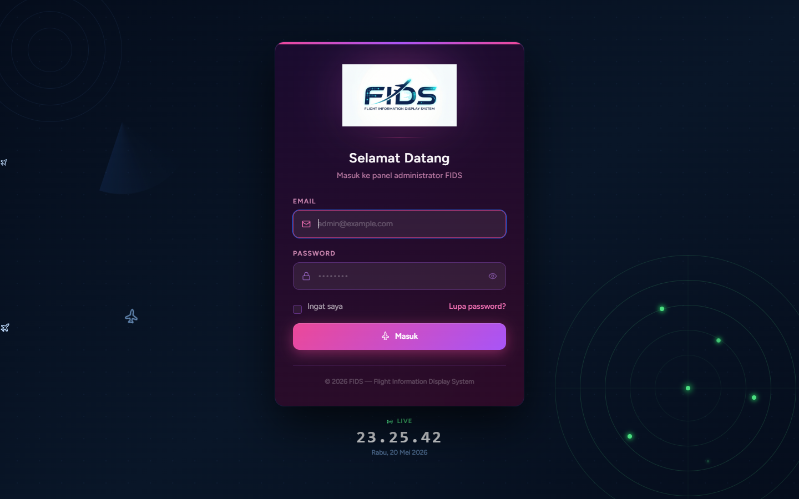
Halaman Login Admin Autentikasi aman dengan email verification
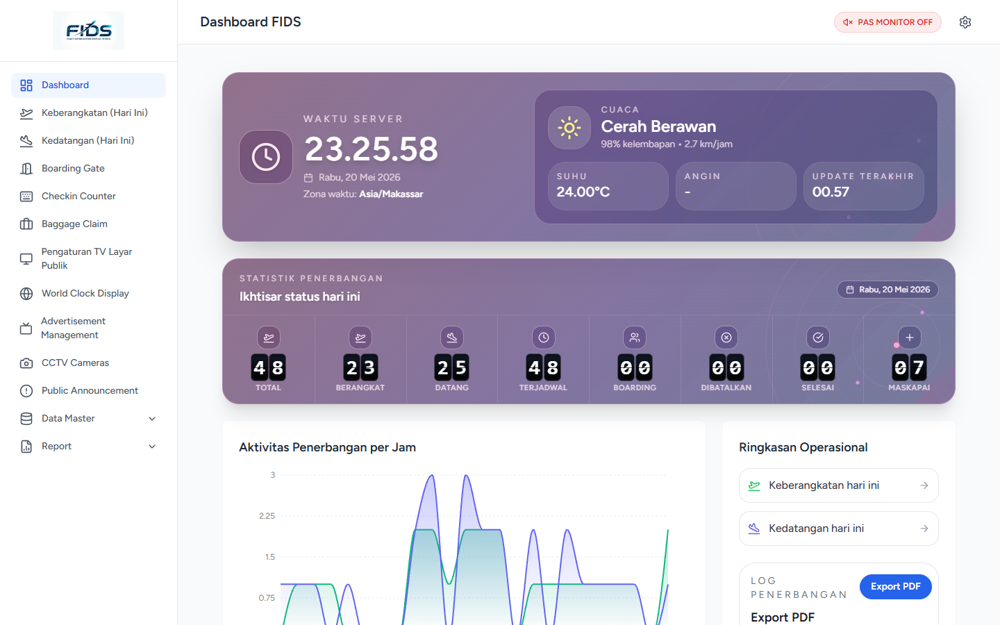
Dashboard Operasional Statistik penerbangan hari ini, grafik jam sibuk, cuaca, dan waktu server
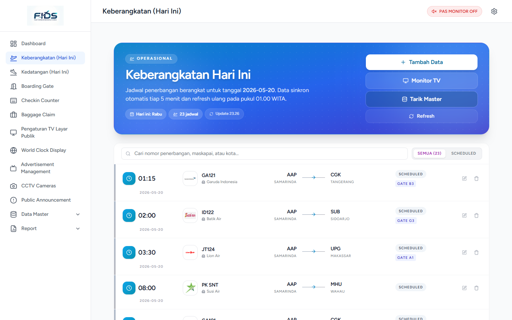
Manajemen Keberangkatan Harian Update status real-time: Scheduled → Check-in → Boarding → Departed
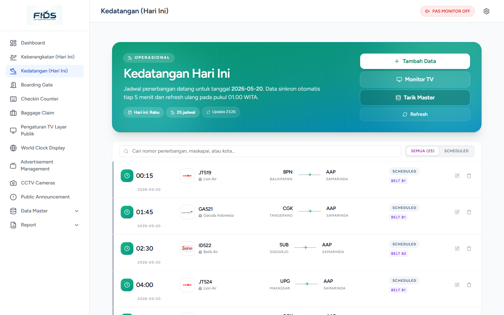
Manajemen Kedatangan Harian Update status: Scheduled → Landed → Baggage Claim
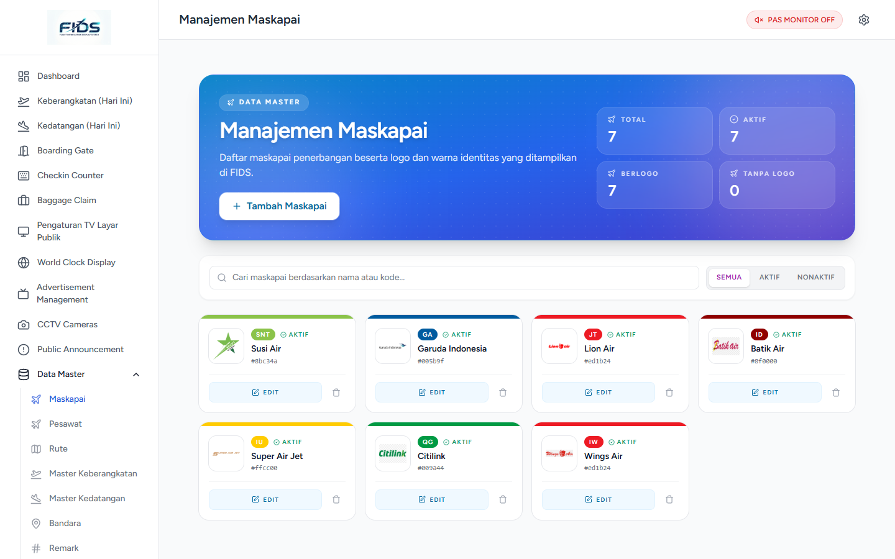
Manajemen Maskapai Data maskapai dengan logo, kode, dan warna identitas
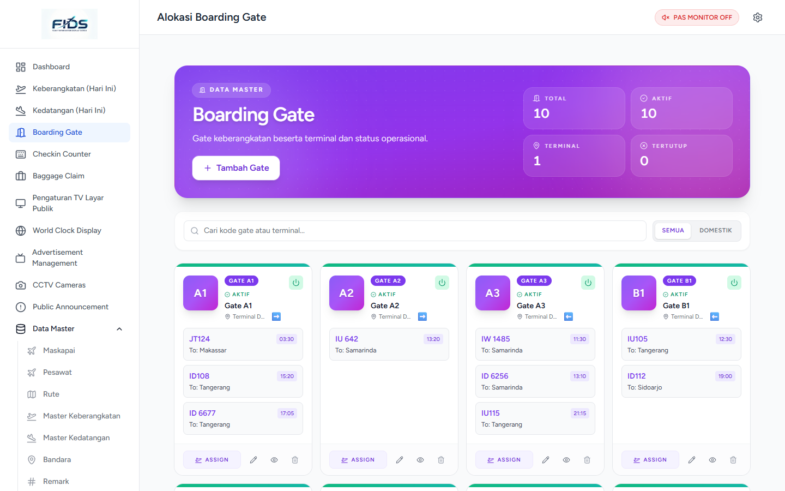
Manajemen Boarding Gate Status gate real-time beserta penerbangan yang terjadwal
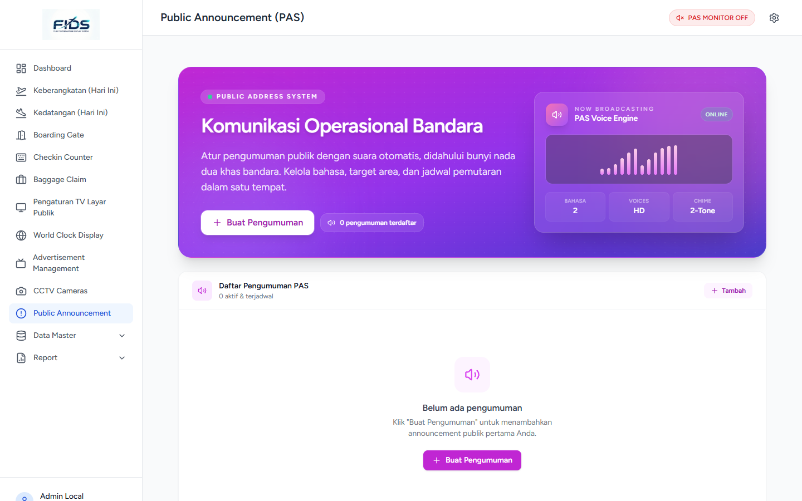
Public Address System (PAS) Pengumuman bandara dengan Text-to-Speech otomatis dua bahasa
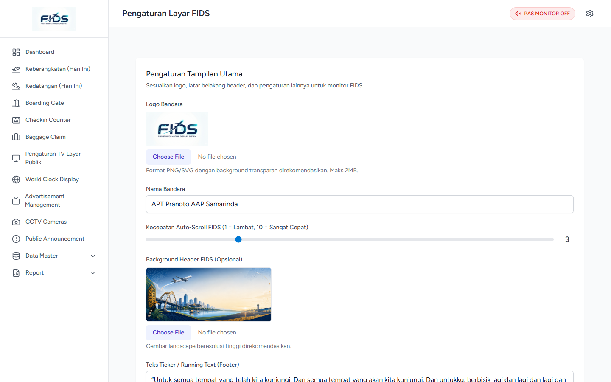
Pengaturan Tampilan Layar Kustomisasi logo, nama bandara, background, ticker, dan tema warna
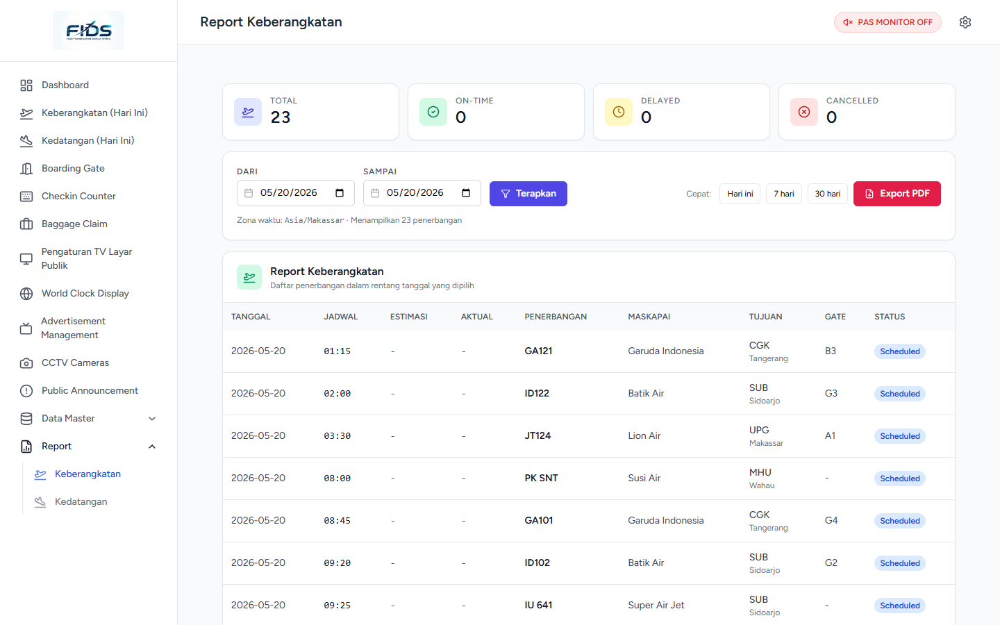
Laporan & Analytics Penerbangan Statistik on-time rate, delay rate, distribusi maskapai, dan export PDF
Stack Teknologi
Dibangun dengan Teknologi Modern
Menggunakan framework dan library terpercaya yang banyak dipakai di industri global — bukan solusi buatan sendiri yang sulit dipelihara.
⚙ Backend
FrameworkLaravel 13
BahasaPHP 8.3+
DatabaseMySQL 8
AuthenticationLaravel Breeze + Sanctum
Role & PermissionSpatie Laravel Permission
PDF ExportLaravel DomPDF
StorageLocal / AWS S3
QueueDatabase Queue
🎨 Frontend
UI FrameworkReact 18 + TypeScript
Laravel BridgeInertia.js (SPA)
StylingTailwind CSS 3
Build ToolVite 8
Komponen UIRadix UI / shadcn
ChartsRecharts
IconsLucide React
RoutingZiggy (Laravel ↔ React)
🖥 Infrastruktur
Web ServerNginx / Apache
Session & CacheDatabase
Time SyncNTP Protocol
CuacaBMKG Open Data API
DeploymentVPS / Shared Hosting / Cloud
OSLinux / Windows Server
✅ Spesifikasi Minimum
Server PHPPHP 8.3+
DatabaseMySQL 8.0+
RAM Server2 GB (rekomendasi 4 GB)
Layar DisplayTV/Monitor + Browser
KoneksiLAN lokal / Internet
LisensiTidak ada biaya tambahan
Modul Lengkap
✈
Data Master Penerbangan
Maskapai · Bandara · Rute · Pesawat · Gate · Counter Check-in · Baggage Belt · Kode Keterangan
📅
Jadwal Master & Harian
Jadwal mingguan otomatis generate ke harian. Update status penerbangan dengan audit trail lengkap.
🔊
Public Address System
Pengumuman TTS dua bahasa, jadwal siaran, batas putar, dan antrian broadcast otomatis.
📡
Integrasi CCTV
Live stream via iframe, MJPEG, atau YouTube. Overlay informasi penerbangan otomatis saat pesawat tiba.
🌤
Info Cuaca BMKG
Data cuaca real-time dari BMKG: suhu, kelembapan, angin, dan kondisi cuaca di layar publik.
🎞
Manajemen Iklan Media
Upload gambar/video hingga 200MB. Atur durasi, urutan, dan status aktif per iklan.
🕐
Sinkronisasi NTP
Server NTP terkonfigurasi dengan auto-sync, interval yang dapat diatur, dan riwayat sinkronisasi.
📈
Laporan & Export PDF
Laporan keberangkatan/kedatangan dengan grafik, on-time rate, delay rate, dan export PDF langsung.
🎨
Kustomisasi Tampilan
Logo, background, tema warna, ticker teks, layout layar publik — semua dapat diatur dari panel admin.
Siap untuk Bandara Anda?
Sistem FIDS siap diimplementasikan untuk bandara skala kecil hingga menengah dengan biaya investasi yang efisien.
Platform
Web-Based (Browser)
Bahasa
Indonesia & Inggris